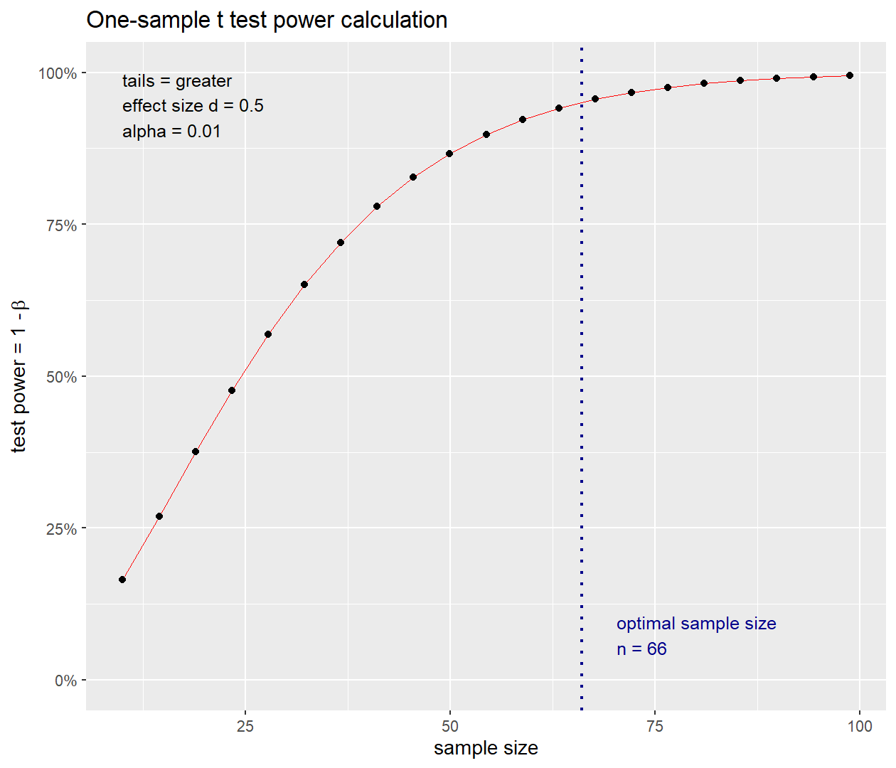

Tamaños de muestra sobre el efecto
Introducción
El muestreo consiste en la selección de un conjunto representativo de una población, con el fin de observar y analizar su comportamiento. Cuando se habla de una muestra probabilística se refiere a una muestra aleatoria. Una muestra es aleatoria cuando los elementos que constituyen la población tienen la misma posibilidad de ser seleccionados. Existen numerosos procedimientos en la aplicación de este tipo de muestreo de acuerdo con los objetivos de investigación.
Uno de los objetivos comunes en investigaciones epidemiológicas es comparar los estdísticos estimados de las muestras aleatorias contra valores teóricos o parámetros poblacionales para establecer diferencias significativas que denoten una condición particular a investigar. De acuerdo con esto surge la inquietud de cuántas personas incluir en el estudio con el fin de detectar las diferencias, en otras palabras, cuál es el tamaño de muestra mínimo para rechazar la hipótesis nula.
Para los cálculos del tamaño de muestra utilizaremos los paquetes pwr y WebPower.
require(pwr)
require(WebPower)Proporciones
La idea básica de calcular tamaños de muestra para una proporción es establecer el tamaño del efecto, la confianza y la potencia deseada.
\[\begin{align*} H_0:& \pi=\pi_0\\ H_a:& \pi=\pi_1=\pi_0+\delta \end{align*}\]
Una aproximación basado en el estadístico de prueba para el cálculo del tamaño de muestra es:
\[n=\frac{1}{\delta^2}\left(z_\alpha\sqrt{\pi_0(1-\pi_0)}+z_\beta\sqrt{\pi_1(1-\pi_1)}\right)^2\]
si se desea mayor precisión se puede estimar el tamaño de la muestra a través de métodos computacionales estableciendo el tamaño del efecto basado en la transofrmación arcseno.
\[h=2\times\arcsin(\sqrt{\pi_0})-2\times\arcsin(\sqrt{\pi_1})\]
Suponga que, en un país donde el tabaquismo masculino ha sido extremadamente común en los últimos años, un objetivo del gobierno ha sido reducir la prevalencia del tabaquismo masculino a, como máximo, el 30%. Se planea una encuesta de muestra para evaluar, al nivel del 5%, la hipótesis de que la proporción de fumadores en la población masculina es de 0.3 frente a la alternativa unilateral de que es mayor. La prueba debería ser capaz de encontrar una prevalencia del 32%, cuando sea cierto, con una potencia del 90%.
Con el primer método se tiene: \[\begin{align*} n=&\,\frac{1}{0.02^2}\left(z_{0.05}\sqrt{0.3(1-0.7)}+z_{0.1}\sqrt{0.32(1-0.68)}\right)^2\\\\ n=&\,\frac{1.826768}{0.0004}\\\\ n=&\,4566.92\\\\ n \approx &\, 4567 \end{align*}\] Para poder detectar diferencias en la prevalenca del tabaquismo es necesario tomar 4567 muestras.
Usando R cabe aclarar el método es aproximado a partir del tamaño del efecto.
(h <- ES.h(p1 = 0.32,p2 = 0.3))## [1] 0.04324895n <- pwr.p.test(h = h,sig.level = 0.05,power = 0.9,alternative = "g")
plot(n)
En el caso de la diferencia de proporciones, se parte de las hipótesis.
\[\begin{align*} H_0:& \pi_1=\pi_2\\ H_a:& \pi_1-\pi_2=\delta \end{align*}\]
El cálculo del tamaño de muestra necesario para detectar diferencias significativas, requiere del nivel de significancia, la potencia deseada y el tamaño del efecto basado en la transofrmación arcseno.
\[h=2\times\arcsin(\sqrt{\pi_1})-2\times\arcsin(\sqrt{\pi_2})\]
Cohen (1988) clasifica el tamaño del efecto en bajo, mediano y alto para valores del tamaño del efecto \(0.2\), \(0.5\) y \(0.8\) respectivamente.
Un investigador planea comparar las proporciones de estudiantes femeninas en dos universidades, UCLA y USC. Para ayudar a decidir el tamaño de la muestra, ha encontrado los siguientes datos de los periódicos escolares correspondientes que puede usar como el tamaño del efecto esperado.
U de A U de M Número de estudiantes (Mujer) 26 42 Número de estudiantes (Hombre) 35 39 ¿Cuál sería el tamaño de muestra necesario de cada escuela para obtener una potencia de 0.8 en el nivel alfa 0.05?
Del enunciado se tiene que \(p_1=26/61\) y \(p_2=42/81\), entonces el tamaño del efecto es: \[\begin{align*} h &= 2\times\arcsin(\sqrt{26/61})-2\times\arcsin(\sqrt{42/81})\\ &=-0.1851271 \end{align*}\] Con esta información es fácil calcular el tamaño de muestra para cada universidad, asumiendo igual tamaño de muestra (\(n=n_1=n_2\)).
# Tamaño del efecto
(h <- ES.h(26/61,42/81))## [1] -0.1851271(n <- pwr.2p.test(h = h,power = 0.8,sig.level = 0.05,alternative = "two"))##
## Difference of proportion power calculation for binomial distribution (arcsine transformation)
##
## h = 0.1851271
## n = 458.0329
## sig.level = 0.05
## power = 0.8
## alternative = two.sided
##
## NOTE: same sample sizesplot(n)
Promedios
La idea básica de calcular tamaños de muestra para una media es establecer el tamaño del efecto, la confianza y la potencia deseada.
\[\begin{align*} H_0:& \mu=\mu_0\\ H_a:& \mu=\mu_1 \end{align*}\]
Una aproximación basado en el estadístico de prueba para el cálculo del tamaño de muestra es:
\[n=\frac{(z_{1-\alpha}+z_{1-\beta})^2\sigma^2}{(\mu_1-\mu_0)^2}\]
Si se desea mayor precisión se puede estimar el tamaño de la muestra a través de métodos computacionales estableciendo el tamaño del efecto.
\[d=\frac{\mu_1-\mu_0}{\sigma}\]
Se planea un estudio de intervención para comparar el tratamiento farmacológico con la medicina alternativa en el tratamiento de una afección médica específica. El medicamento debe almacenarse en un centro de salud listo para su distribución. El medicamento se suministra en sobres, que se supone que contienen exactamente 2 mg del medicamento. Se cree que los suministros pueden haber sido excesivos, lo que podría comprometer los resultados del estudio (aunque no representa un peligro para los sujetos tratados). En consecuencia, se tomarán muestras de una cantidad de sobres y se probará su contenido medio contra la hipótesis nula de que la media realmente es 2.0. Se utilizará una prueba de significancia del 1% porque el centro de salud desea estar muy seguro de que los sobres tienen sobrepeso antes de quejarse con el proveedor. Se sabe que la desviación estándar del contenido del sobre, por experiencia previa, es de 0.2 mg. El centro de salud decide que es importante estar 95% seguro de detectar cuándo el contenido medio verdadero es 2.1 mg. ¿Cuántas bolsitas se deben muestrear?
Con el primer método se tiene: \[n=\frac{(z_{0.99}+z_{0.95})^2(0.2)^2}{(2.1-2.0)^2}=63.08177 \approx 64\] Para detectar diferencias significativas en el contenido de los sobres es necesario extraer 64 muestras
Usando R cabe aclarar el método es aproximado a partir del tamaño del efecto.
d <- (2.1-2)/0.2
(n <- pwr.t.test(d=d,sig.level = 0.01,power = 0.95,
type = "one",alternative = "g"))##
## One-sample t test power calculation
##
## n = 65.82775
## d = 0.5
## sig.level = 0.01
## power = 0.95
## alternative = greaterplot(n)
En el caso de la diferencia de medias, se parte de las hipótesis:
\[\begin{align*} H_0:& \mu_1=\mu_2\\ H_a:& \mu_1-\mu_2=\delta \end{align*}\]
Por simplicidad, si se asume que las varianzas son iguales entonces la varianza común puede denotarse como \(\sigma\) y es conocida. Para determinar los tamaños de muestra para ambos grupos \(n_1\) y \(n_2\) se define la proporción de asignación \(r=n_1/n_2\) para establecer el tamaño de muestra global \(n\).
\[n=n_1+n_2=(r+1)n_2\]
Entonces dado un nivel de significancia y una potencia deseada, el tamaño de muestra es dado por:
\[n=\frac{(r+1)^2(z_{1-\alpha}+z_{1-\beta})^2\sigma^2}{\delta^2r}\]
Observe que si se asume \(n_1=n_2\) entonces la proporción de asignación es \(r=1\), adicionalmente si la prueba de hipótesis es para definir la diferencia se trabaja con \(z_{1-\alpha/2}\).
Si se desea el método aproximado por la distribución t-student entonces se debe definir el tamaño del efecto.
\[d=\frac{\mu_1-\mu_2}{\sigma_p}\]
Donde \(\sigma_p\) es la varianza conjunta poblacional, si los tamaños de muestra de ambos grupos son iguales, observe que:
\[\sigma_p=\sqrt{\frac{\sigma_1^2+\sigma_2^2}{2}}\]
Cohen (1988) clasifica el tamaño del efecto en bajo, mediano y alto para valores del tamaño del efecto \(0.2\), \(0.5\) y \(0.8\) respectivamente.
Creemos que la diferencia del precio promedio de compra en la cafetería de la Escuela es de más de $1.3 entre hombres y mujeres. Nuestro valor nulo es que los hombres gasta igual que las mujeres; nuestra alternativa es que la diferencia entre hombres y mujeres es mayor a $1.3. Podemos usar una prueba t de una muestra para investigar esta corazonada con un poder del 90%. Si asumimos que el número de hombres es igual al número de mujeres en el estudio ¿Cuántas transacciones debemos observar suponiendo un nivel de significancia de 0.05? Digamos que el precio máximo de compra es de $10 y el mínimo es de $1. Entonces nuestra suposición a una desviación estándar es \(9/4=2.25\). Con la información del enunciado tenemos que: \[\mu_h-\mu_m=\delta=3\] Entonces el tamaño de muestra mínimo para detectar las diferencias de gasto es: \[n=\frac{(1+1)^2(z_{0.975}+z_{0.9})^2(2.25)^2}{1.3^2}=125.9026\approx 126\] Es necesario revisar 63 transacciones de mujeres y 63 transacciones de hombres para detectar una diferencia significativa entre los precios promedios. Utilizando el método del tamaño del efecto tenemos: \[d=\frac{1.3}{2.25}=0.577778\]
d <- 1.3/2.25
(n <- pwr.t.test(d=d,sig.level = 0.05,power = 0.9,type = "two",alternative = "g"))##
## Two-sample t test power calculation
##
## n = 51.99774
## d = 0.5777778
## sig.level = 0.05
## power = 0.9
## alternative = greater
##
## NOTE: n is number in *each* groupplot(n)